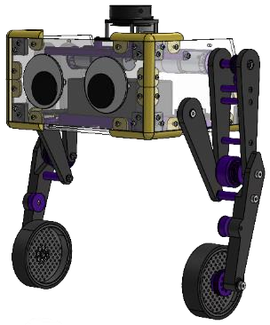
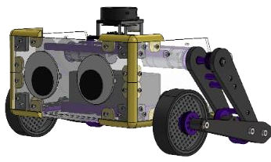
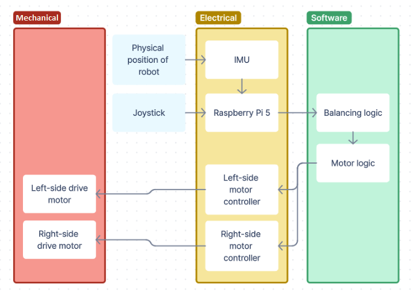
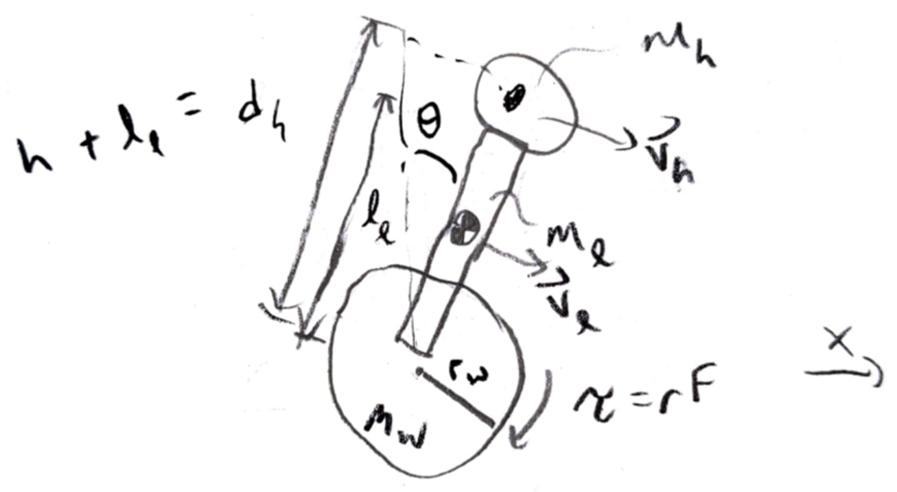

An application of software requirements engineering, software architecture, calculus of variations, and writing documentation
ROCKO is an educational, bipedal, wheeled robotics platform designed to bridge the gap between introductory robotics education and graduate-level applications. It is intended for hobbyists, students, and educators and is open-source and highly expandable for applications like controls, automation, and vision.
This project was inspired by our primary stakeholder's experience with a mobile robotics course. The course content revolved around implementing a robotic system to autonomously navigate an environment with sensor integration. However, the stakeholder and their team struggled to implement features to the level they wanted because the provided robotics platform did not have high-accuracy sensor readings and had limited onboard computation power.
While researching existing robotics platforms, we found that there is no commonly-used platform targeting "intermediate" level learners. With ROCKO, we aim to provide a reliable mechanical system with high-performance electrical hardware and an extensible, production-like software architecture that is capable of advanced robotics research costing less than $750.
ROCKO has two modes. It can operate as a balancing, wheeled biped robot and as a stable tank drive robot.
Standing Mode
Tank Mode


ROCKO can be described in terms of mechanical, electrical, and software subsystems.

We started by applying what some of us had learned in Software Requirements Engineering to elicit needs from four stakeholder categories:
From the needs, we developed features and then requirements. Below is a list of our hardware and software requirements. See the linked pdfs for the formal needs, features, and requirements with mapping and reasoning and final results for the requirements below.
Hardware
Software
Since this was for our senior capstone course, our advisors wanted all the teams to have a similar timeline.
We decided to create two robots: one alpha robot prototype and a final version. The table below describes some milestones and when we intend to reach them.
| Milestone | Date |
|---|---|
|
Design review with benefactor
|
Midway through fall quarter |
|
Alpha robot complete
|
End of fall quarter |
|
Final robot done mechanically |
End of winter quarter |
|
Capstone report and final presentation complete |
Eighth week of spring quarter |
|
Final robot complete
|
End of spring quarter |
|
Documentation complete |
End of spring quarter |
We spent most of the fall quarter developing ROCKO's software architecture to make the platform a more useful base for learning robotics-related skills. We focused on learnability and modifiability so that users could get something working quickly and then add motors and sensors to explore more advanced topics in robotics. We decided to use ROS2 and the ros2_control framework because it is used in industry and lets users easily implement controllers and communicate with motors and sensors.
The fundamental entities in ROS2 are nodes and topics. Each node contains logic, like reading values from sensors or determining a value to output, and the nodes communicate through topics, named interfaces for messages, by subscribing to or publishing to them.
Some special nodes used in ros2_control are hardware components and controllers. ros2_control includes many built-in controllers, like a PID controller and a differential drive controller, making it easier for users to get started using ROS2, and users can also choose to write their own controllers. Each motor or sensor has a hardware component to read inputs or send outputs. Those components simplify the process of adding, removing, or modfying motors and sensors because only the hardware component and the topics it is publishing to or subscribed to would need to be modified.
ROS2 can be used with either Python or C++, but ros2_control only supports C++. Since Python is generally easier for newer programmers, we developed templates for users to add Python ros2_control nodes. Then, users can choose between Python and C++.
Tank mode only has the differential drive controller, giving ROCKO more processing power. That lets users run more complex logic in tank mode, like SLAM. It can also help the user make sure the motors are working correctly before trying standing mode.

Many of the self-balancing robots we researched implemented linear-quadratic regulator (LQR) control, and they used concepts that looked familiar from a calculus of variations course. Since ROCKO is a multidisciplinary capstone project and I am also a math major, we decided to implement LQR control. I did not have any control theory experience, so I spent a lot of the winter quarter learning control theory concepts, like state-space control and pole placement, and how to model an inverted pendulum.
However, we realized that we would need to control the motors' torque output if we wanted to use LQR control. But our motors were controlled by PWM, so we could not specify a torque to reach target position values. Torque control would require redoing the entire electrical system, changing motor and motor controller mounting, and purchasing new motors and controllers. We then switched to using two proportional, integral, derivative (PID) controllers, for pitch and velocity, that many of my group members were already very familiar with.
In control theory, we often use state-space methods, where we design controllers for a system in state-space form. So, from a physical system, we input values from a measured state into the state feedback matrix, \(K\), and solve for the eigenvalues of \(K\) to determine the input to the physical system. LQR control determines the best eigenvalues based on a cost functional, which depends on motor characteristics and desired performance characteristics. We can optimize the cost functional using methods from calculus of variations.
We need a mathematical model of ROCKO to determine how to control it. We find equations of motion describing linear acceleration and rotational acceleration because ROCKO can be simplified as an inverted pendulum, with the head and legs being a point mass. We use the Euler-Lagrange method, which is based on energy, to derive the equations of motion.

These first steps give us nonlinear, coupled equations of motion.
First, we find the kinetic and potential energy of the system. Let \(x\) be ROCKO's distance from the starting point and \(\theta\) be the angle of the head from vertical. Then, the velocity of the wheels is
\[\vec{v}_w=\langle \dot{x},0\rangle\text{,}\]the velocity of the head and legs is
\[\vec{v}_{hl}=\langle \dot{x}+\dot{\theta}d_{hl}\cos(\theta),-\dot{\theta}d_{hl}\sin(\theta)\rangle\text{,}\]and the rotational velocity of the head and legs is
\[\dot{\theta}_{hl}=\dot{\theta}\text{.}\]Then, we have the kinetic energy
\[T=\frac{1}{2}m_{hl}\lvert\vec{v}_{hl}\rvert^2+\frac{1}{2}m_w\lvert\vec{v}_w\rvert^2+\frac{1}{2}I_{hl}\dot{\theta}_{hl}^2\text{.}\]The height of the mass for the head and legs is
\[h_{hl}=d_{hl}\cos(\theta)\text{.}\]Then, we have the potential energy
\[V=gm_{hl}h_{hl}\text{.}\]The Lagrangian is the difference between the kinetic and potential energies, so we have
\[L=T-V\text{.}\]By Hamilton's Principle, we know that local extrema of
\[J(\vec{q})=\int_{t_0}^{t_1}L(t,\vec{q}(t),\dot{\vec{q}}(t))dt\text{,}\]with \(\vec{q}=\langle x, \theta\rangle\), satisfy the Euler-Lagrange equations. We use the Euler-Lagrange equations
\[\frac{\partial L}{\partial x}-\frac{d}{dt}\frac{\partial L}{\partial \dot{x}}=F\text{ and }\frac{\partial L}{\partial \theta}-\frac{d}{dt}\frac{\partial L}{\partial \dot{\theta}}=\tau\text{,}\]with \(F\) and \(\tau\) being the input force and torque, respectively. Then, we have the coupled equations
\[\begin{aligned} F&=(m_w+m_{hl})\ddot{x}(t)-d_{hl}m_{hl}\left(\dot{\theta}(t)^2\sin\left(\theta(t)\right)-\cos\left(\theta(t)\right)\ddot{\theta}(t)\right)\\ \tau&=\left(d_{hl}^2m_{hl}+I_{hl}\right)\ddot{\theta}(t)-d_{hl}m_{hl}\left(g\sin\left(\theta(t)\right)-\cos\left(\theta(t)\right)\ddot{x}(t)\right)\text{.} \end{aligned}\]ROCKO uses two PID controllers: a pitch controller and a velocity controller. Those controllers are sufficient for letting ROCKO balance and drive around. We manually tuned the PID controllers' gain values in the following order:
After we changed our controls method, which the other group members started working on, I created a tank mode for ROCKO. The tank mode is where the robot does not balance, allowing users to learn robotics concepts that require more computation power, because the robot does not need to perform balancing calculations.
This project gave me experience communicating with many different people. Our client was a Rose alumnus, and we constantly updated him on progress and discussed ideas. Every week, we met with our advisor to go over progress and ask questions about his expectations for deliverables. When we were learning controls, we met with one of the mechanical engineering professors to see if we were on the right track and ask modeling-related questions. Since this was a multidisciplinary capstone, we had group members working on mechanical, electrical, and software components, and it was extremely important for us to communicate with each other so that we understood possible limitations and to make sure each part we worked on could be combined to make ROCKO.